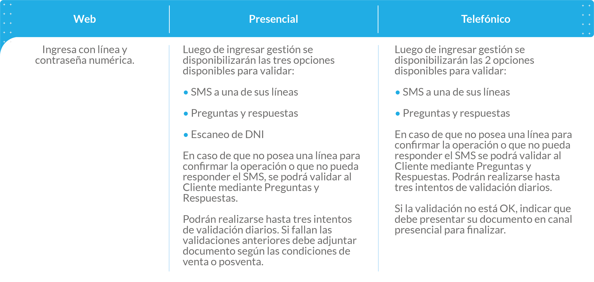
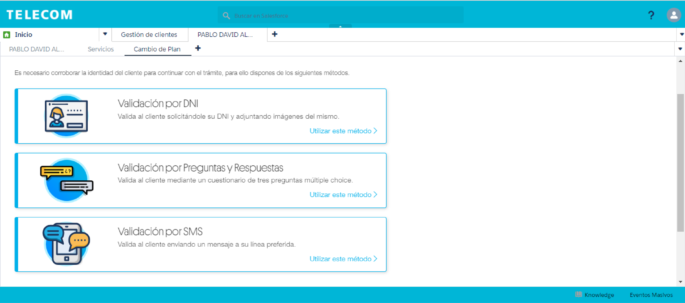
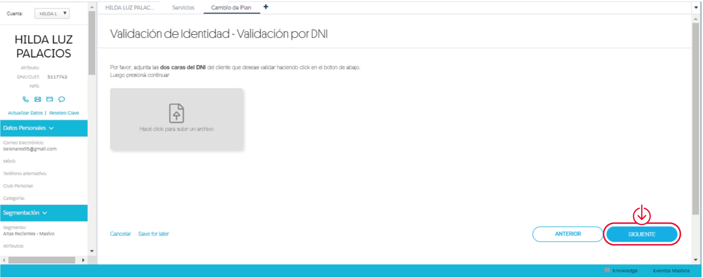
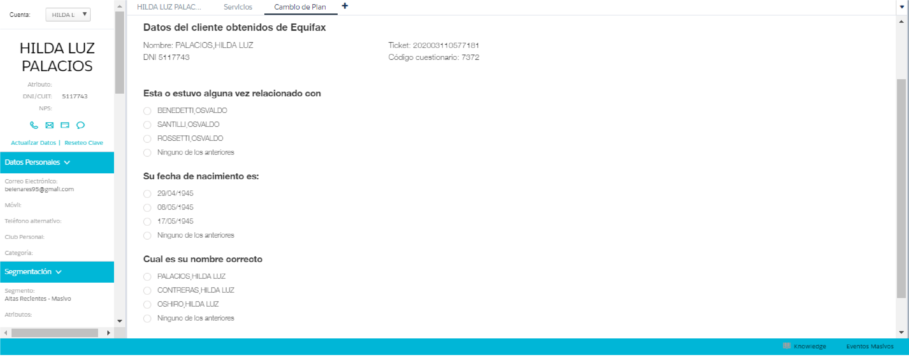
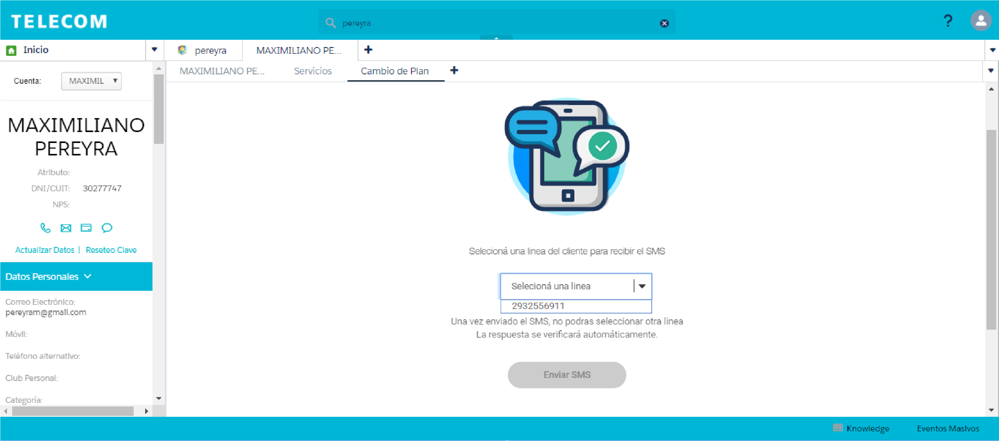

Algunas operaciones de venta o de posventa (dependiendo de la operación y del medio de pago), la nominación y la creación de un cliente requerirán de la validación correspondiente para identificar al cliente que está realizando la gestión.
Validación de cliente según el canal (Para procesos de Venta/Posventa)
Tipos de Validación
Al realizar alguna gestión que solicite validar identidad te permitirá seleccionar entre las disponibles de acuerdo al canal:
Validación por DNI (sólo para canal presencial)
Se deben adjuntar las dos caras del DNI y hacer click en siguiente.
Validación por Preguntas y Respuestas
Se deben contestar las preguntas que te indicará el CRM.
Validación por SMS
Al seleccionar esta opción el CRM mostrará todas las líneas activas por DNI y podrás elegir una para realizar la validación por SMS. El cliente deberá responder el mensaje de confirmación que reciba para completar la validación (este se podrá reenviar en caso de que no le llegue la primera vez). Una vez que el cliente responda el mensaje, verás una pantalla de confirmación de la validación de identidad y podrás continuar con la gestión.
Uno de los cambios significativos de #Fan es que permite validar identidad a clientes mayores de 16 años para que accedan a una Oferta Prepaga. Tené en cuenta las siguientes aclaraciones: